오토바이 그룹 라이딩 · 기록 · 공유 · 소셜 네트워크
호스트가 방을 열면 집결지도 코스도 모두의 지도에. 달리는 동안 서로 어디쯤인지 보이고, 이모지 한 번으로 신호를 보낸다. 끝나면 기록이 남는다 — 오토바이 라이더를 위한 앱.
Android는 순서가 있습니다. ① 테스터 그룹 가입(누구나 가능) → ② [Play에서 받기]. 그룹에 넣은 구글 계정과 폰의 Play 계정이 같아야 앱이 보입니다.
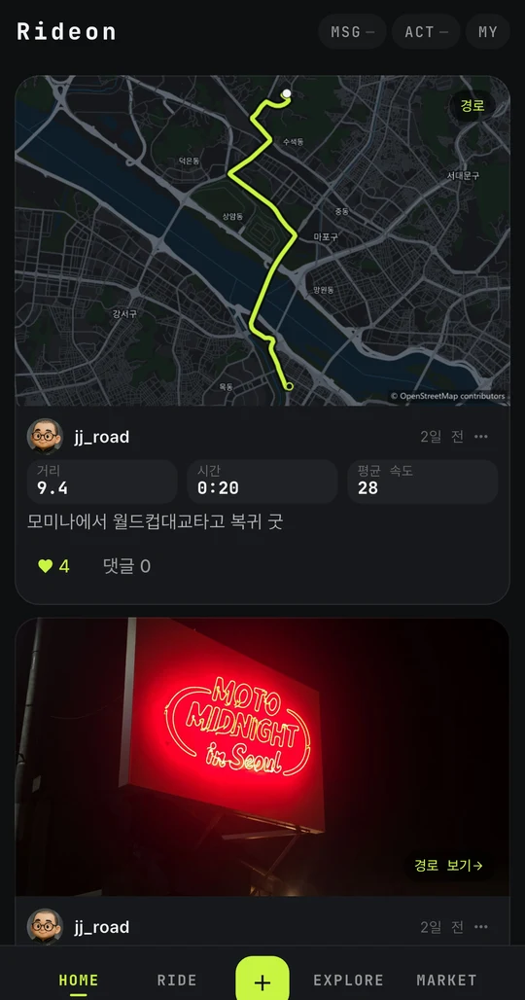
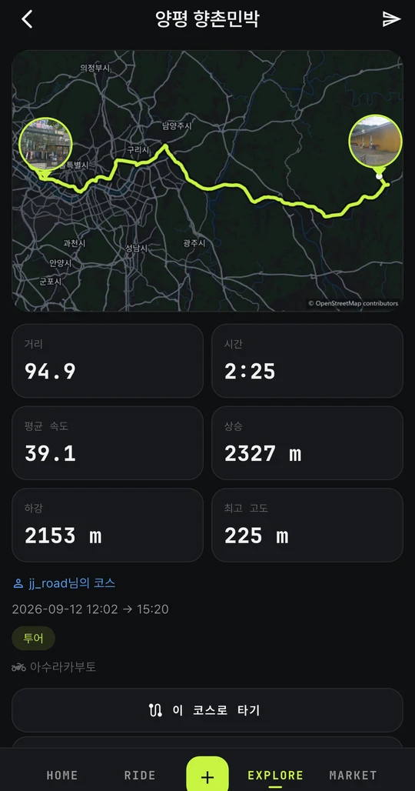
WHY RIDEON
같이 출발했는데 교차로 하나 지나면 뒤가 안 보인다. 앞은 어디서 기다려야 할지 모르고, 뒤는 어디로 갔는지 모른다.
단톡방에 캡처 한 장 던지고 끝. 각자 내비를 다시 찍다 보면 다른 길로 새고, 자동차 내비는 이륜차가 못 가는 길로 보낸다.
주유하고 싶은데, 잠깐 쉬고 싶은데, 뒤에 문제가 생겼는데 — 손을 뗄 수 없으니 그냥 따라간다.
거리는 앱에, 사진은 갤러리에, 이야기는 단톡방에. 좋았던 코스를 다음에 또 가려면 어디로 갔는지 기억이 안 난다.
WHAT IT DOES
보는 것, 가는 곳, 하고 싶은 말. 한 방 안에서 다 이어진다.
방을 열면 집결지와 코스가 모두의 지도에 뜬다. 달리는 동안 서로가 어디쯤인지 보이고, 뒤처진 사람은 알아서 표시된다. 리더가 정한 코스가 안내선으로 켜져서 각자 내비를 찍을 일이 없다.
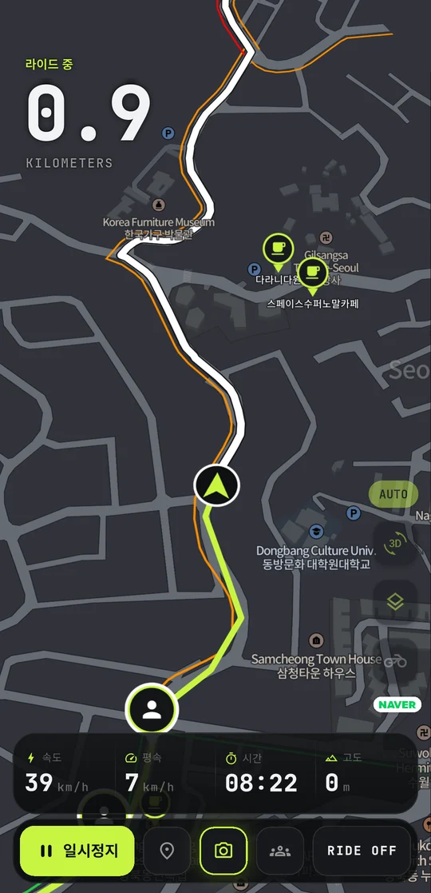
주행 중에는 글자를 못 친다. 그래서 주행 중 대화는 이모지만 — ⛽ 주유, ☕ 커피, 🐢 천천히, ⚠️ 주의. 한 번 누르면 방 전체에 뜨고, 받는 쪽은 지도 위에 살짝 떠 있다 사라진다. 세우고 나면 글자로도 얘기할 수 있다.
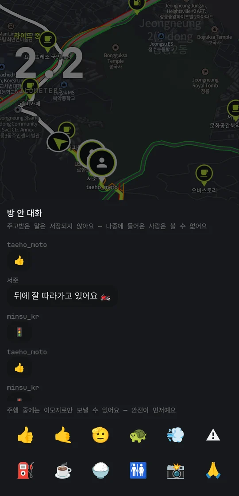
주머니에 넣고 달려도 거리·시간·속도·고도가 쌓인다. 터널이나 산길에서 신호가 끊겨도 폰에 먼저 적어 두고 나중에 올린다. 끝나면 지도 그림과 경험치가 붙고, 그 코스는 다음에 그대로 다시 탈 수 있다.
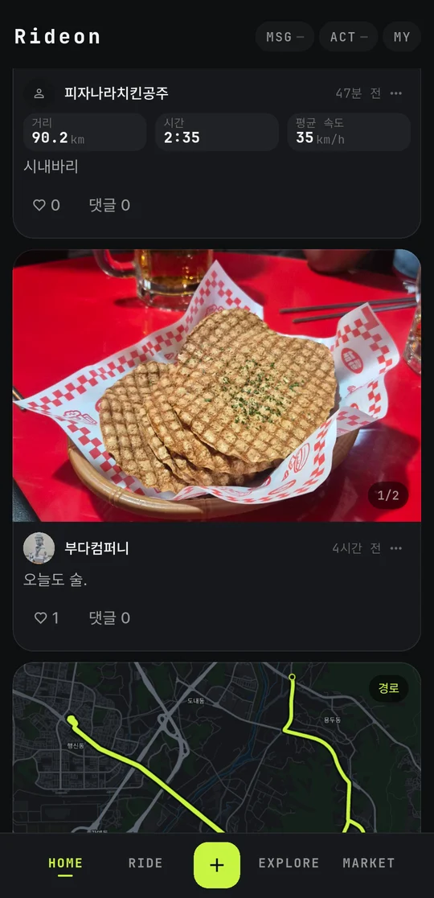
달리다 좋은 곳이 보이면 버튼 한 번. 끝나고 사진과 별점을 붙여 올리면 다른 라이더의 다음 코스가 된다. 라이더가 남긴 평만 모이는 장소 목록 — 주차 되는지, 헬멧 둘 데 있는지.
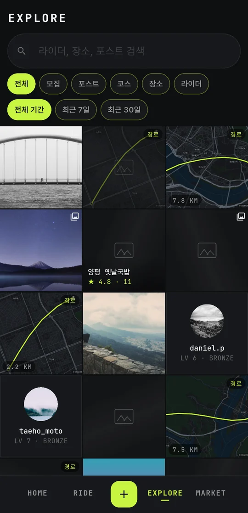
ONE RIDE, START TO FINISH
아래는 실제 화면입니다 — 호스트 한 명과 세 명이 북악에서 정릉까지 달린 한 판.
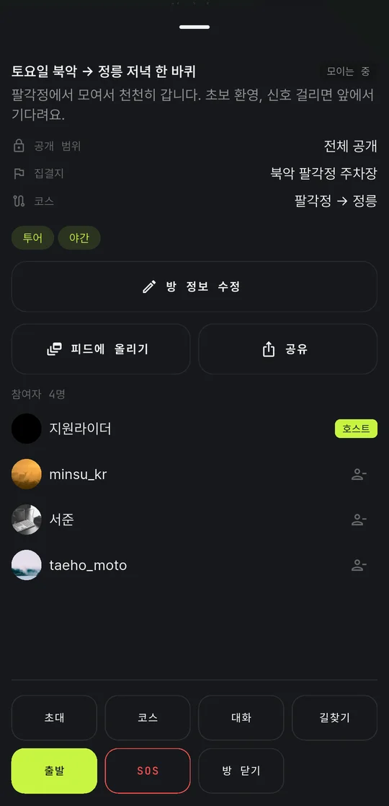
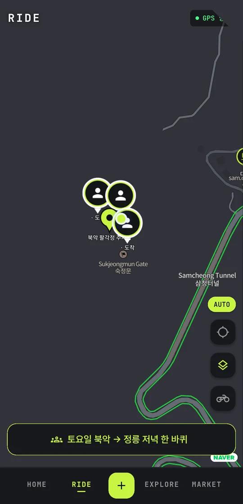
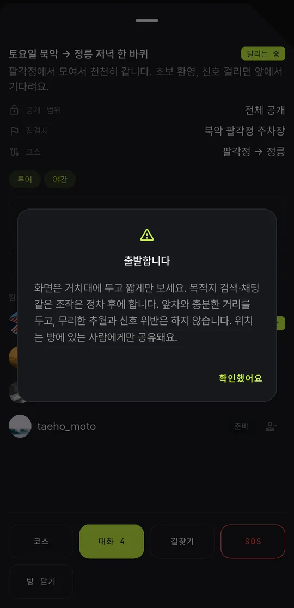
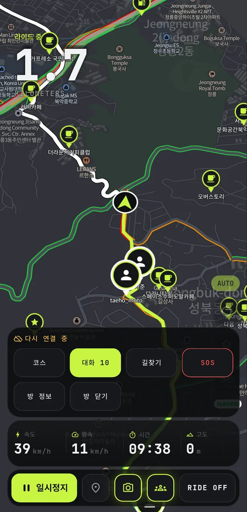
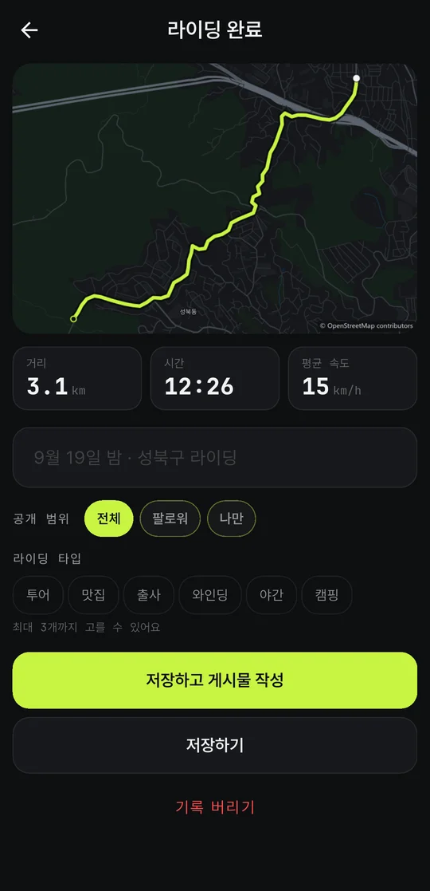
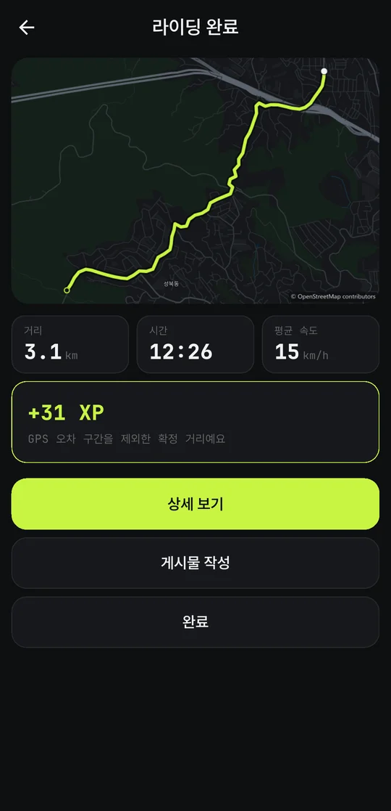
PLAN AHEAD · FIND A RIDE
일요일 아침 남산, 다음 주 토요일 팔당. 출발 시각을 정해 두면 참여한 사람의 홈에 예정된 라이딩 카드로 뜨고, 시간이 가까워지면 알림이 간다. 출발 전엔 준비 완료를 눌러 누가 왔는지 확인한다.
탐색 탭 [모집]에 지금 모이는 방과 예정된 방이 거리순으로 보인다. 초보 환영, 야간 출사, 맛집 투어 — 방 이름과 태그로 성격을 밝히고, 승인제로 열면 호스트가 받아 준다.
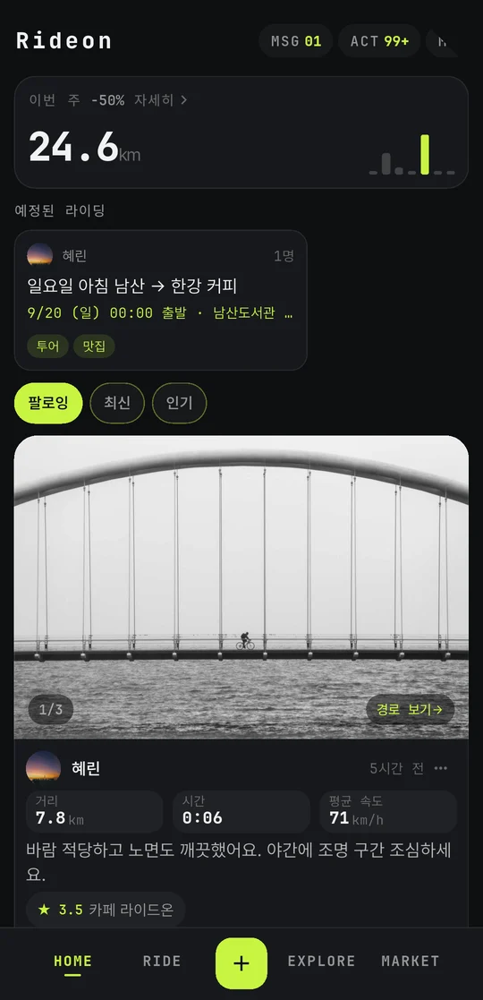
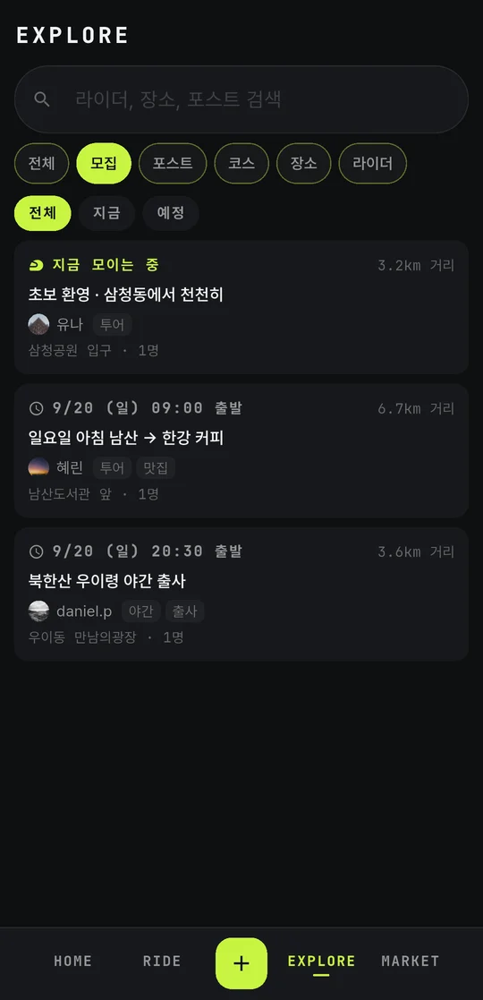
BUILT FOR MOTORCYCLES
라이더가 실제로 쓰는 것부터 만들었다.
주유소 · 카페 · 정비소 · 전망대를 골라서 켠다. 달리는 중엔 꼭 필요한 것만 보여야 한다.
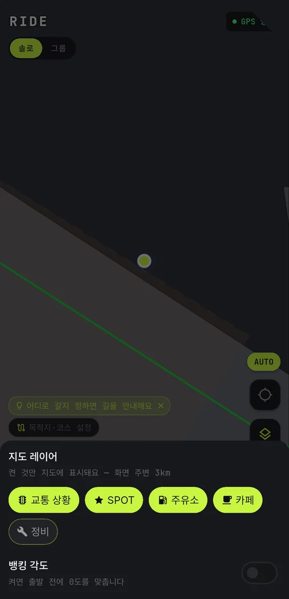
담아 둔 코스가 지도에 안내선으로 깔린다. 주행 중엔 3D로 진행 방향이 위를 향하고, 회전은 음성으로 알려 준다.
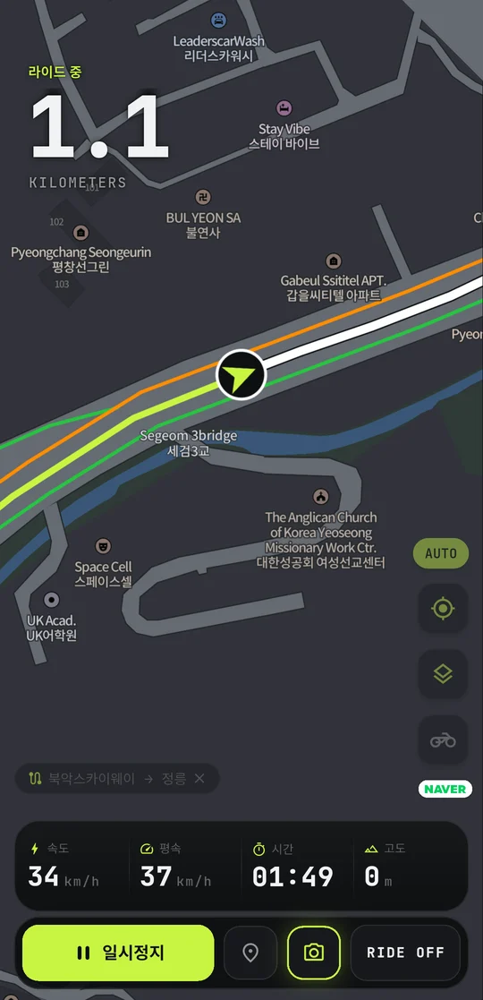
COMING NEXT · 크루
그룹 라이딩은 한 번의 주행이고, 크루는 소속이다. 매번 새로 모으지 않아도 되는 사람들과 대화 · 일정 · 공지를 한 곳에서. 크루 홈 위쪽엔 지금 상태가, 아래엔 대화가 흐른다.
화면은 설계안입니다 — 다음 업데이트에서 나옵니다.
GET STARTED
RIDE 탭 [그룹]에서 방을 열고 코드를 나눠 주세요. 혼자면 RIDE ON — 첫 기록이 시작됩니다.
PRIVACY & SAFETY
같은 방에서 달리는 사람에게만, 달리는 동안만 보입니다. 방이 끝나면 위치 공유도 끝납니다.
남에게 보이는 기록은 출발·도착 지점을 가릴 수 있습니다. 라이딩은 대개 집에서 시작하니까요.
설정에서 바로 계정을 지울 수 있습니다. 개인정보처리방침에 무엇을 얼마나 보관하는지 적어 두었습니다.
주행 중에는 조작하지 마세요. 목적지 검색 · 채팅은 안전한 곳에 세운 뒤에 — 앱도 출발할 때 한 번 더 묻습니다.
FAQ
지금은 비공개 베타라 모든 기능이 무료입니다. 정식 출시 뒤에도 기록·그룹 라이딩 같은 기본 기능은 무료로 둡니다.
됩니다. 같은 방에서 섞여서 달릴 수 있습니다.
됩니다. 주행 중엔 이모지 한 번으로 신호를 주고받고, 위치는 지도에서 봅니다. 음성 대화가 필요하면 세나·카도 같은 인터콤을 같이 쓰세요 — 음성 길안내는 연결된 헤드셋으로 나옵니다.
지금은 방마다 호스트가 정원을 정합니다. 정원 없이도 열 수 있습니다.
됩니다. 초대 코드나 링크로 달리는 중에도 들어올 수 있고, 승인제 방이면 호스트가 받아 줍니다.
기록과 지도는 됩니다. 길안내는 지금 한국 안에서만 동작합니다.
기록은 폰에 먼저 남기고 나중에 올립니다. 터널이나 산길에서 신호가 끊겨도 주행은 이어서 쌓입니다.
화면을 꺼도 GPS가 계속 돌기 때문에 일반 앱보다 씁니다. 장거리는 충전하면서 달리는 것을 권합니다.
실시간 위치는 같은 방에서 같이 달리는 사람에게만, 달리는 동안만 보입니다. 저장된 기록은 공개 범위를 직접 고릅니다.
다음 업데이트에서 나옵니다. 지금 베타에서 그룹 라이딩을 다듬고, 그 위에 크루를 얹습니다.
앱의 설정에서 바로 지울 수 있습니다. 앱 밖에서 요청하는 방법은 계정 삭제 안내에 있습니다.
READY FOR THE NEXT RIDE
무료 · 비공개 베타. 지금 테스터로 함께해 주세요.
비공개 테스트 중이라 화면은 계속 바뀝니다 — 위 사진은 2026년 9월 빌드입니다.